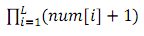
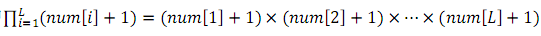

近日，园长发现动物园中好吃懒做的动物越来越多了。例如企鹅，只会卖萌向游客要吃的。为了整治动物园的不良风气，让动物们凭自己的真才实学向游客要吃的，园长决定开设算法班，让动物们学习算法。
某天，园长给动物们讲解KMP算法。
园长：“对于一个字符串S，它的长度为L。我们可以在O(L)的时间内，求出一个名为next的数组。有谁预习了next数组的含义吗？”
熊猫：“对于字符串S的前i
园长：“非常好！那你能举个例子吗？”
熊猫：“例S为abcababc，则next[5]=2。因为S的前5个字符为abcab，ab既是它的后缀又是它的前缀，并且找不到一个更长的字符串满足这个性质。同理，还可得出next[1] = next[2] = next[3] = 0，next[4] = next[6] = 1，next[7] = 2，next[8] = 3。”
园长表扬了认真预习的熊猫同学。随后，他详细讲解了如何在O(L)的时间内求出next数组。
下课前，园长提出了一个问题：“KMP算法只能求出next数组。我现在希望求出一个更强大num
最后，园长给出了奖励条件，第一个做对的同学奖励巧克力一盒。听了这句话，睡了一节课的企鹅立刻就醒过来了！但企鹅并不会做这道题，于是向参观动物园的你寻求帮助。你能否帮助企鹅写一个程序求出num
特别地，为了避免大量的输出，你不需要输出num[i]分别是多少，你只需要输出对1,000,000,007
